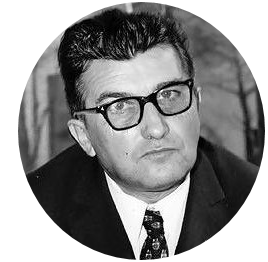

1960-1963
Manufacturing magnate Italian Ferruccio Lamborghini founded the company in 1963 with the objective of producing a refined grand touring car to compete with offerings from established marques such as Ferrari. The company's first models, such as the 350 GT, were released in the mid 1960s. Lamborghini was noted for the 1966 Miura sports coupé, which used a rear mid-engine, rear wheel drive layout.